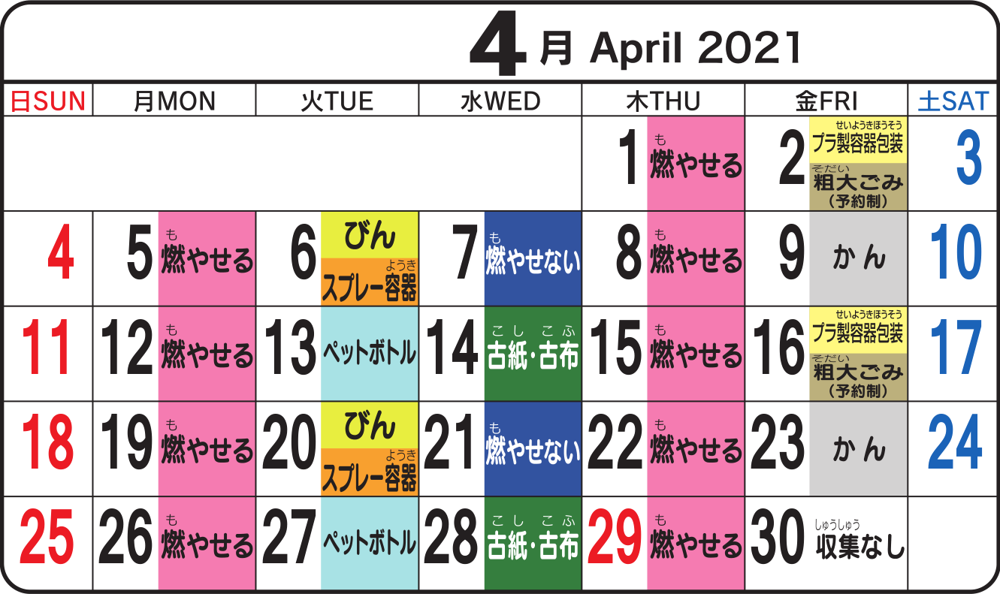

Time and day of garbage disposal
Isa sa pinaka-importanteng gawain bilang residente ng Japan ay ang paghihiwalay ng basura bago ito itapon. Itapon ang basura sa tamang oras at araw, tamang lalagyan at tamang lugar.
Oras ng pagtatapon ng basura
Kailangang ilabas ang basura nang hindi lalampas sa 8:00 (o 8:30 sa umaga, depende sa lugar). Huwag ilalabas ang basura sa gabi dahil baka ikalat ng mga uwak at iba pang hayop.
Araw ng pagtatapon ng basura
 Example ng isang buwang schedule ng pagtatapon ng basura sa lungsod ng Tsukuba, Ibaraki.
Ang city hall o munisipyo ay gumagawa ng Garbage Disposal Calendar kasama ng booklet o papel tungkol sa paghihiwalay ng basura. Karamihang binibigay ito ng real estate agent sa nangungupahan ng apartment sa oras na lilipat siya sa bahay o apartment.
Para sa matagal nang naninirahan sa isang lugar, ipinapadala naman ito direkta ng city hall o munisipyo sa tirahan.
-
Sa example sa itaas ay makikita na ang pinakamadalas na tinatapon na basura ay ang Burnable Garbage (Moyaseru Gomi 燃やせるごみ). Tinatapon ito tuwing Lunes at Huwebes.
-
Sa Martes naman ay sabay (pero magkahiwalay ng lalagyan) na tinatapon ang Bote (Bin びん) at Spray Container (Supurei Yōki スプレー容器) dawalang beses sa isang buwan. Ang PET bottles (Pettobotoru ペットボトル) ay may sariling araw ng pagtatapon, dawalang beses din sa isang buwan.
-
Sa Miyerkules ay nagpapalitan na tinatapon ang Non-burnable Garbage (Moyasenai Gomi 燃やせないごみ) at Lumang Papel/Lumang Damit (Koshi/Kofu 古紙・古布).
-
Sa Biyernes ay sabay na tinatapon ang Plastic Container and Packaging (Purasei Yōki Hōsō プラ製容器包装) at Oversized Garbage (Sodai Gomi 粗大ごみ). (Ang pagtatapon ng Oversized Garbage ay karamihang pinapaalam mula sa garbage disposal service center.) Sa Biyernes din tinatapon ang mga Lata (Kan かん).
-
Sa Sabado at Linggo ay walang schedule ng pick-up ng basura.